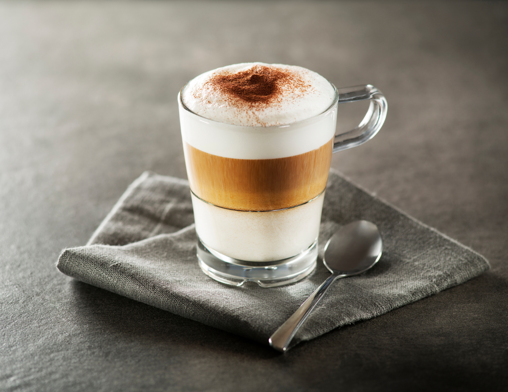
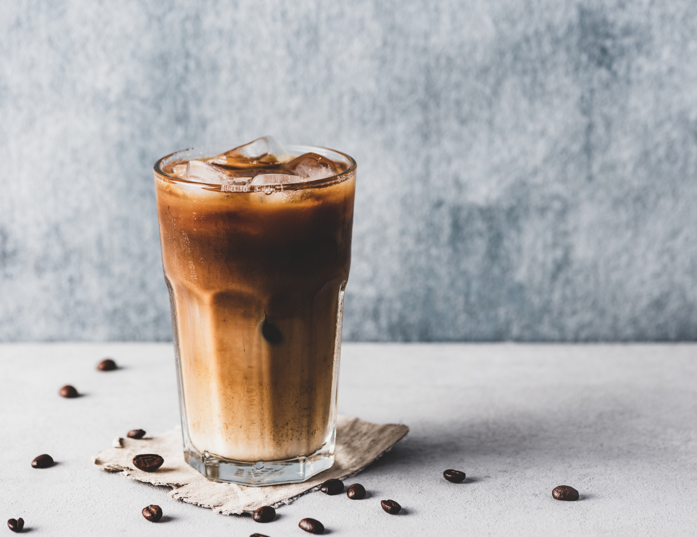
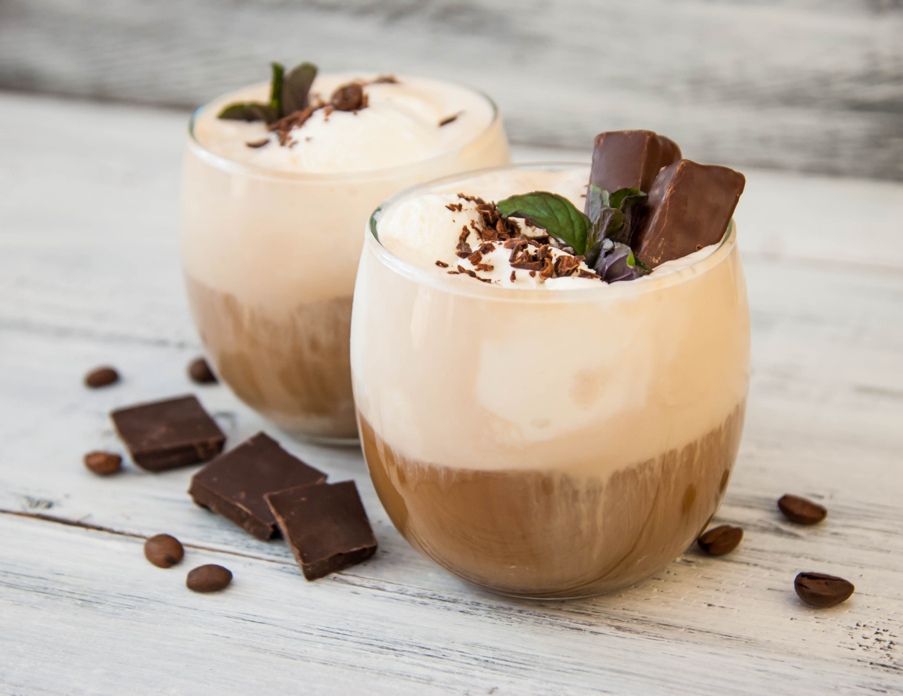

Cappuccino

Ingredients
18g ground espresso (or 1 espresso pod)
150ml milk
To serve
cocoa powder (optional)
You will also need
the right cup , 200-250ml capacity
Method
STEP 1
Make around 35ml espresso using a coffee machine and pour it into the base of your cup.
STEP 2
Steam the milk with the steamer attachment so that it has around 4-6cm of foam on top.
Hold the jug so that the spout is about 3-4cm above the cup and pour the milk in steadily.
As the volume within the cup increases, bring the jug as close to the surface of the drink as possible whilst aiming to pour into the centre.
Once the milk jug is almost touching the surface of the coffee, tilt the jug to speed up the rate of pour.
As you accelerate, the milk will hit the back of the cup and start naturally folding in on itself to create a pattern on the top.
Dust the surface with a little cocoa powder if you like.
Iced coffee

Ingredients
200ml strong black coffee.
50ml milk.
ice.
maple syrup, optional.
Method
STEP 1
Make a 200ml cup of black coffee following pack instructions, then allow the coffee to go completely cold.
Pour into a blender with the milk along with 2 or 3 handfuls of ice and maple syrup, if using, then blend until smooth and foamy.
STEP 2
Pour into a chilled tall glass and serve.
Mocha

Ingredients
18g ground espresso, or 1 espresso pod.
250ml milk.
1 tsp drinking chocolate.
You will also need
large cup, 300-350ml capacity.
Method
STEP 1
Make around 35ml espresso using a coffee machine and pour into the base of your cup.
Add the drinking chocolate and mix well until smooth.
STEP 2
Steam the milk with the steamer attachment so that it has around 4-6cm of foam on top.
Hold the jug so that the spout is about 3-4cm above the cup and pour the milk in steadily.
As the volume within the cup increases, bring the jug as close to the surface of the drink as possible whilst aiming into the centre.
Once the milk jug is almost touching the surface of the coffee, tilt to speed up the rate of pour.
As you accelerate, the milk will hit the back of the cup and start naturally folding in on itself to create a pattern on the top.
Espresso Martini

Ingredients
For the sugar syrup
100g golden caster sugar.
For the cocktail
ice.
100ml vodka.
50ml freshly brewed espresso coffee.
50ml coffee liqueur (we used Kahlua).
4 coffee beans (optional).
Method
STEP 1
Start by making the sugar syrup.
Put the caster sugar in a small pan over a medium heat and pour in 50ml water.
Stir, and bring to the boil.
STEP 2
Turn off the heat and allow the mixture to cool.
Put 2 martini glasses in the fridge to chill.
STEP 3
Once the sugar syrup is cold, pour 1 tbsp into a cocktail shaker along with a handful of ice, the vodka, espresso and coffee liqueur.
Shake until the outside of the cocktail shaker feels icy cold.
STEP 4
Strain into the chilled glasses.
Garnish each one with coffee beans if you like.